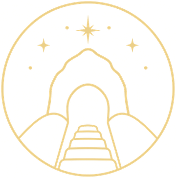

Jen pro tebe
Můj deník
Tiché místo pro tvé vlastní zápisky. Co jsi cítil, kam se chceš vrátit, co ti místo řeklo. Vidíš to jen ty — nikam se to nesdílí.
Deník je jen tvůj
Přihlas se, aby si tě deník pamatoval a nikdo jiný do něj neviděl.

Atlas energetických místJen pro tebe
Tiché místo pro tvé vlastní zápisky. Co jsi cítil, kam se chceš vrátit, co ti místo řeklo. Vidíš to jen ty — nikam se to nesdílí.
Přihlas se, aby si tě deník pamatoval a nikdo jiný do něj neviděl.